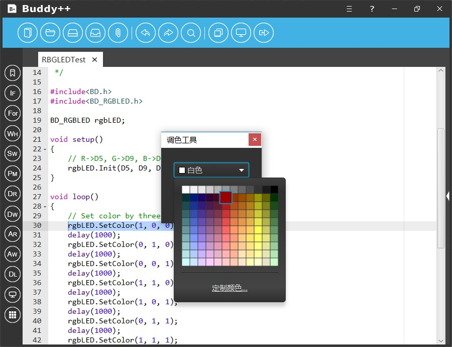

为方便初学者能较高效地使用扩展模块Buddy++特意提供了“扩展工具”的功能，开发者可以使用“所见即所得”的方式开发基于扩展模块的应用，例如是LED阵列绘图、蜂鸣器谱曲、全彩彩灯的编程、数码管的显示、LCD屏幕的显示等等，这些扩展工具也将以插件的形式呈现，开发者可以根据相关标准定制开发指定功能的扩展插件。
Buddy++配套一个8×8 LED点阵图案生成的插件，开发者可以通过可见即所得的方式编辑LED阵列的显示图案。开发者点击界面中的圆点进行图案编辑，亮红色的圆点为阵列中被点亮的LED灯，编辑完成后点击“生成”按钮，插件就会在代码区指定的位置中插入代表编辑图案的数组。

使用蜂鸣器开发一个编程音乐盒是一件非常有趣的事情，我们可以通过不同的脉冲信号改变蜂鸣器发声的频率从而控制器发出的声调。以往使用纯代码进行开发时，歌曲的编辑是一项十分抽象的工作，从而要求开发者有良好的空间想象能力。Buddy++针对这个问题为开发者提供了一个非常简便的谱曲插件，开发者可以使用“可见即所得” 的方式对曲谱进行创作与编辑。

开发者需要在界面中选取对应曲谱的音调和节拍，当开发者完成编辑后，点击生成按钮，插件就会在代码区指定的位置中插入代表的代码。
当我们对全彩彩灯模块进行开发的时候，我们经常要接触相关的颜色代码，颜色值的表达往往有多种方式，如使用整型、浮点型、字节型记录颜色RGB分量，又如使用十六进制代码记录颜色值等等，这对于初学者来说要熟记或掌握这么多类型的颜色数值表示方法具有相当的难度，因此Buddy++提供了颜色拾取的插件为初学者提高开发效率。开发者只需要点击弹出“颜色拾取”插件，在调色盘或颜色表中选择指定的颜色，插件就会生成选中颜色的代码。
